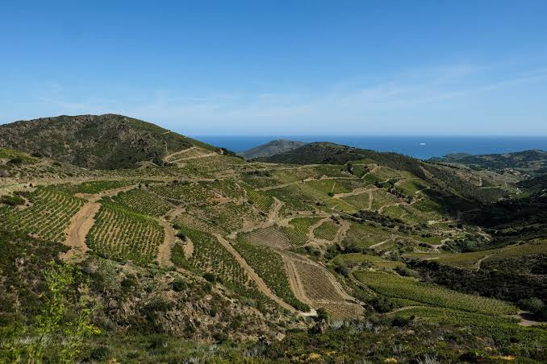

Vignoble en
terrasses
de Banyuls


⟹ Terroir Viticole d'Exception ⟸
Le vignoble de Banyuls est souvent présenté comme un paysage « antique » ou « templier ». La réalité historique est plus nuancée — et plus intéressante encore. La viticulture appartient depuis l'Antiquité à l'histoire générale du littoral méditerranéen catalan, marqué par les échanges grecs, ibères puis romains. Il est cependant difficile d'établir une continuité directe entre ces vignobles anciens et l'extraordinaire système de terrasses visible aujourd'hui sur la Côte Vermeille.

Au Moyen Âge, la vigne est bien présente dans le Roussillon et les établissements religieux ou seigneuriaux participent à l'organisation des terroirs. Une tradition très enracinée attribue aux Templiers l'introduction ou la systématisation des terrasses et des peus de gall — « pieds de coq » —, ces canaux de pierre qui divisent les eaux de ruissellement lors des orages. Les Templiers sont effectivement implantés en Catalogne nord, notamment au Mas Deu, et interviennent à Collioure au XIIIe siècle. Mais les recherches historiques récentes soulignent qu'aucune preuve documentaire ne permet d'affirmer qu'ils ont créé le système hydraulique de Banyuls. Il convient donc de distinguer la tradition locale, importante dans l'identité du vignoble, de ce que les sources permettent d'établir avec certitude.
Le paysage actuel résulte probablement d'une construction beaucoup plus progressive. Pendant des siècles, les pentes portent une agriculture diversifiée : vigne, olivier, cultures vivrières et pâturages se côtoient. La complantation, c'est-à-dire le remplacement des ceps morts au fur et à mesure et la coexistence de plusieurs cépages dans une même parcelle, contribue à former un vignoble très morcelé, adapté à une économie familiale et à des terrains où la mécanisation est presque impossible.
Le traité des Pyrénées de 1659, qui rattache le Roussillon à la France, crée une nouvelle frontière politique au sud du vignoble sans effacer les continuités culturelles et économiques catalanes. Aux XVIIIe et surtout XIXe siècles, la demande en vins et alcools augmente. Le développement du port de Port-Vendres puis l'arrivée du chemin de fer, dans la seconde moitié du XIXe siècle, ouvrent de nouveaux débouchés commerciaux. Plusieurs travaux de recherche considèrent que c'est alors que l'aménagement systématique des versants prend son ampleur spectaculaire.
Pour retenir quelques poignées de terre sur des pentes de schiste parfois vertigineuses, des générations de vignerons construisent des kilomètres de murettes en pierre sèche. Les terrasses ralentissent l'érosion ; les agouilles et peus de gall captent et répartissent les eaux des pluies méditerranéennes, rares mais parfois torrentielles. Ce réseau n'est pas décoratif : il constitue une véritable infrastructure hydraulique collective, patiemment entretenue sans mortier et intimement liée à la survie des sols.
La seconde moitié du XIXe siècle est aussi celle des grandes crises viticoles. Oïdium, mildiou et surtout phylloxéra bouleversent les vignobles européens. Sur la Côte Vermeille, la reconstitution des vignes sur porte-greffes résistants impose un immense travail. Le parcellaire escarpé limite la mécanisation et maintient une viticulture très manuelle. Taille en gobelet, vendanges à la main et transport des comportes sur des pentes raides deviennent les marqueurs de cette « viticulture héroïque ».
Le XXe siècle apporte une reconnaissance juridique à des pratiques plus anciennes de production de vins doux naturels. Les appellations Banyuls puis Collioure fixent progressivement cépages, rendements, aire de production et méthodes. Le grenache, sous différentes formes, devient emblématique. Le mutage — arrêt de la fermentation par ajout d'alcool vinique afin de conserver une partie des sucres du raisin — inscrit les Banyuls dans la grande histoire méditerranéenne des vins doux naturels.
Mais cette reconnaissance n'empêche ni les crises ni l'abandon de certaines parcelles. Les coûts d'entretien des murs, la pénibilité du travail et la faible mécanisation fragilisent le système. Dès lors, conserver le vignoble signifie aussi conserver un paysage construit : réparer les murettes, entretenir les drains, maintenir les chemins et transmettre les savoir-faire. Les milliers de kilomètres de pierre sèche de la Côte Vermeille représentent ainsi autant un patrimoine agricole qu'une protection contre l'érosion et les incendies.
Le vignoble de Banyuls doit donc sa force à l'empilement de plusieurs temporalités : une tradition viticole méditerranéenne très ancienne, un héritage médiéval réel mais parfois entouré de légendes, une transformation majeure des coteaux aux XVIIIe-XIXe siècles, puis les crises et réglementations des XIXe-XXe siècles. Loin d'affaiblir son récit, cette lecture critique révèle l'ampleur du travail collectif qui a réellement sculpté la montagne.
Repères documentaires : Charte paysagère et environnementale du vignoble de la Côte Vermeille (DREAL) ; travaux universitaires sur l'histoire et les mythes du vignoble de Banyuls ; documentation patrimoniale de Banyuls-sur-Mer et des appellations Banyuls-Collioure.
Sur cette géographie extrême, où la pente interdit toute automatisation, les vignerons ont dû devenir de véritables sculpteurs de montagnes. Chaque terrasse, chaque muret de schiste extrait à la main témoigne d'un savoir-faire transmis de génération en génération.
Le climat, marqué par de rares mais violentes pluies d'orage, a rendu ce système d'évacuation des eaux indispensable : sans lui, l'érosion aurait depuis longtemps emporté la fine couche de terre arable nécessaire à la vigne.
Ce paysage de restanques, mêlé de chênes lièges, d'oliviers et de landes méditerranéennes, forme aujourd'hui l'un des vignobles les plus singuliers de France, à la fois monument agricole et œuvre paysagère façonnée sur plus de sept siècles.
Entretien coûteux des murettes : maintenir 6 000 km de murs de pierre sèche exige un travail manuel constant, de plus en plus difficile à financer pour les petits exploitants.
Déprise viticole : certaines parcelles trop pentues, difficiles à cultiver, sont progressivement abandonnées, fragilisant à terme l'équilibre du paysage en terrasses.
Risque d'érosion : l'abandon de l'entretien des murettes et des canaux favorise le ravinement lors des épisodes pluvieux violents, caractéristiques du climat local.
Réchauffement climatique : la hausse des températures pousse certains vignerons à replanter en altitude, à la recherche d'une fraîcheur devenue plus rare sur les coteaux historiques.
Le vignoble se laisse admirer aussi bien depuis les hauteurs que lors d'une visite de cave, entre dégustation et pédagogie du terroir.
Le sentier du Fort du Mas de la Serra et les chemins de la Côte Vermeille offrent des points de vue spectaculaires sur les terrasses descendant vers la mer.
Les caves du village de Banyuls-sur-Mer proposent des visites guidées et des dégustations pour comprendre l'histoire du cru et de ses trois appellations.
La route des crêtes vers la tour de la Madeloc permet d'embrasser du regard l'ensemble du paysage en terrasses, entre Banyuls, Collioure et Port-Vendres.